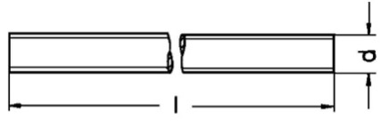
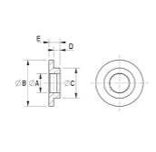
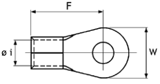
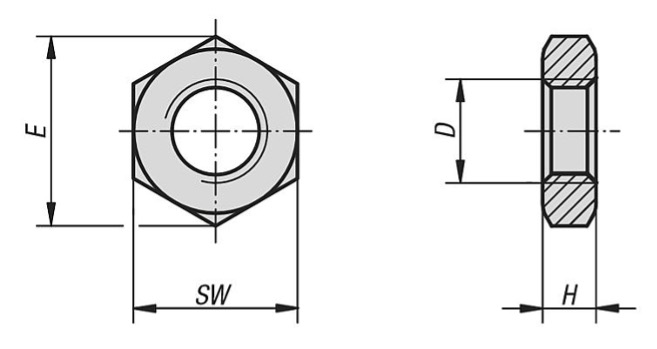
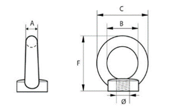
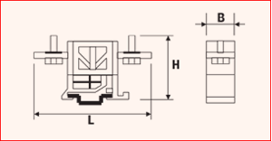
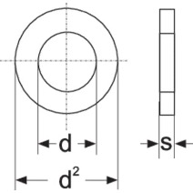
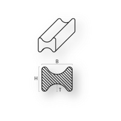
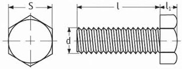

Operatori
Introduzione
Questa tabella permette di inserire tutti gli utenti che utilizzeranno le applicazioni.
Il numero degli utenti non deve necessariamente coincidere con il numero di licenze.
Infatti, il numero di licenze limita solo il numero di accessi contemporanei a Clever Suite.
Esempio
Se un’azienda ha acquistato 3 licenze significa che potrà avere 3 progettisti che lavorano contemporaneamente, ma Clever Suite potrà essere installato su un numero di Computer maggiore di 3, così come il numero degli utenti potrà essere maggiore di 3.
Campi Tabella
- UserName: è lo username che è costituito da due caratteri in lettera maiuscola. Massimo 2 caratteri alfabetici in lettera maiuscola. Regole: Max 2 caratteri alfabetici in lettera maiuscola.
- Nome: è il nome di battesimo dell’utente. Prima lettera maiuscola.
- Cognome: è il cognome dell’utente. Prima lettera maiuscola.
- Ruolo: ruolo dell’utente all’interno dell’applicazione In un’azienda ci può essere un solo “admin” tutti gli altri utenti devono essere “user”. Solo l’utente “admin” può accedere alle opzioni e modificarle. In un gruppo di lavoro deve essere definito il responsabile della configurazione di Clever Suite.
Impostazioni generali
Introduzione
Qui si definiscono le caratteristiche generali delle applicazioni qui sotto riportate.
Percorso per salvataggio documenti:
Durante l’utilizzo delle applicazioni, premendo il bottone esporta, tutti i documenti prodotti dall’applicazione stessa vengono salvati in una cartella ben definita.
Percorso per il salvataggio dei documenti = Percorso della cartella di partenza.
L’applicazione, a partire da questa cartella di base, definisce la cartella in cui verranno salvati i documenti in questo modo:
Cartella di partenza\Tipo applicazione\Codice prodotto\Versione
Esempio
| Campo | Valore |
|---|---|
| Applicazione | Clever Inductor |
| Cartella di partenza | C:\Progettazione |
| Nome del prodotto | 000111 |
| Versione | 2 |
| Cartella di archiviazione documenti | C:\Progettazione\Clever Inductor\000111\2 |
È buona norma che l’archiviazione dei documenti avvenga in rete.
Descrizione
- Logo: si può inserire il proprio logo aziendale che deve avere una risoluzione massima in pixel di 300 x 300.
Premendo il bottone a lato del logo (…) si aprirà una finestra di dialogo che permetterà di caricare il disegno voluto.
Ridurre le dimensioni se non è possibile inserirlo. - Moneta: scegliendo nel box sottostante è possibile selezionare la moneta desiderata.
- Password eliminazione Archivio Aziendale: poiché l’eliminazione di progetti dall’Archivio Aziendale è un’operazione critica, occorre introdurre una password per procedere in quest’operazione. Per sicurezza il campo successivo chiede conferma.
Parametri elettrici
Introduzione
Qui si trovano alcuni parametri che intervengono nel calcolo elettrico e nella progettazione meccanica e che sono tipici di ogni azienda.
Sporgenza isolante a lato degli avv.ti (mm)
Inserire la sporgenza dell’isolante tra le spire in caso di avvolgimento in nastro. Questo valore viene impostato automaticamente nei progetti. Vale solo per il conduttore nastro poiché per i conduttori piattina e filo la sporgenza impostata è 0.
Per tutti i tipi di conduttore, durante il progetto, c’è la possibilità di modificare questo valore.
Spessore isolamento conduttore piatto
Il conduttore piatto (piattina) può essere smaltato o isolato Nomex. A seconda del tipo di isolamento cambia lo spessore dello stesso. Inserire qui lo spessore utilizzato nella vostra azienda.
Fattore di sfrido conduttori
Se desiderate che, nella distinta base e nel calcolo costo, il peso dell’avvolgimento venga aumentato di un fattore che tiene conto degli eventuali scarti, inserite qui il fattore moltiplicativo. Nelle specifiche tecniche e nel calcolo del peso dell’avvolgimento ci sarà comunque il peso esatto (teorico).
Esempio
| Campo | Valore |
|---|---|
| Peso teorico del conduttore | 10.00 kg |
| Fattore di sfrido | 1.03 |
| Peso che compare in distinta base e calcolo costo | 10.30 kg |
Fattore di sfrido nucleo
Stesso principio del punto precedente applicato al peso del nucleo.
Coefficienti di stipamento
Introduzione
Si dice coefficiente di stipamento il fattore moltiplicativo che si applica allo spessore teorico dell’avvolgimento per giungere allo spessore reale dello stesso. Questo parametro dipende dal tipo di macchine di avvolgimento presenti in azienda e dalle modalità di lavoro. Generalmente, per determinare correttamente il coefficiente di stipamento nelle varie condizioni, occorre definire una serie di avvolgimenti campione, misurarne lo spessore calcolare reale e calcolare il rapporto tra lo spessore reale e quello che era stato calcolato teoricamente. È stata data enfasi a questo parametro perché è molto importante. Dall’accuratezza del calcolo dello spessore reale dell’avvolgimento, infatti, deriva la precisione nel calcolo di:
- Tensione di corto circuito
- Tensione a carico
- Perdite nei conduttori e di conseguenza sovratemperatura nei vari tratti dell’avvolgimento
Nella tabella esiste la possibilità di definire il coefficiente di stipamento a seconda del tipo, del materiale e dello spessore del conduttore.
Utilizzando i bottoni “+” o “-“ presenti nel navigatore in alto a destra, è possibile inserire righe per ottenere maggiore granularità oppure cancellare righe se non sono necessarie per la particolare situazione della vostra azienda.
Campi della tabella (Coefficienti stipamento)
- Forma bobina: codice che identifica la forma della bobina che può essere rettangolare R oppure cilindrica C Nelle applicazioni attuali non è ancora prevista la bobina cilindrica quindi il contenuto di questo campo deve essere sempre R la diversificazione è stata già prevista per usi futuri.
- Materiale: materiale di cui è costituito l’avvolgimento AL o CU.
- Codice: identifica il tipo di avvolgimento. Inserire uno dei seguenti codici: F = filo P = Piattina B = Nastro.
- Spessore MAX: spessore radiale massimo del conduttore. Se il coefficiente di stipamento introdotto vale per qualsiasi spessore inserire 0 se invece c’è una limitazione di spessore inserire lo spessore limite. In questo caso, per quel tipo e/o materiale conduttore sarà necessario inserire un’ulteriore riga senza limitazione, ossia con Spessore MAX = 0 inserendo il giusto coefficiente.
- Coefficiente: fattore moltiplicativo da applicare allo spessore teorico per ottenere lo spessore reale.
Parametri costruttivi
Introduzione
Sotto parametri costruttivi si trovano tutte le tabelle che definiscono i parametri da utilizzare per progettare ogni tipo di elemento in modo ottimizzato.
Nella versione PROFESSIONAL di Clever Suite, ricevete tabelle con valori standard che possono essere anche lontani dai proporzionamenti che utilizzate nella vostra azienda, perché l’ottimizzazione dipende spesso dalle condizioni economiche, geografiche e temporali con le quali la vostra azienda si confronta.
È molto importante quindi confrontare questi dati con la vostra ottimizzazione interna e valutare attentamente i valori da inserire allo scopo di ottenere, per i vari tipi di elemento e le varie potenze, il progetto al minor costo.
In sostanza, si tratta di definire, per ogni tipo di elemento e per ogni potenza, quali sono i parametri geometrici che vi portano il maggior vantaggio in termini economici.
L’inserimento dei parametri geometrici corrispondenti a questa ottimizzazione, poiché verranno adottati automaticamente dalle applicazioni Clever, vi permetteranno di progettare immediatamente elementi il più possibile ottimizzati.
Per i grandi elementi esistono due tabelle: una per elementi costruiti con il lamierino magnetico a grani non orientati (NO) e uno per lamierino magnetico a grani orientati (GO). Questo perché nei due casi il proporzionamento generalmente è differente.
È possibile inserire altre tabelle, su richiesta, per definire parametri differenti per costruzioni speciali (ad esempio elementi per trazione).
Tutte le dimensioni riportate nelle tabelle sono in mm. salvo esplicita indicazione.
Campi della tabella (Lamierino NO e Lamierino GO)
- Descrizione: descrizione libera del tipo di elemento. Non viene utilizzata all’interno delle applicazioni e quindi potete scrivere ciò che preferite.
- Potenza VA: potenza di dimensionamento dell' elemento in VA.
- Tratti Avv.Prim: numero tratti dell’avvolgimento primario (nel caso di induttori sarà il numero dei tratti totale poiché c’è solo un avvolgimento.
- Canale Avv. Prim: spessore del canale frontale tra i tratti del primo avvolgimento.
- Tratti Avv.Sec: numero tratti dell’avvolgimento secondario.
- Canale Avv. Sec: spessore del canale frontale tra i tratti dell’avvolgimento secondario. Questo canale viene utilizzato anche tra il primario e il secondario. Se ci fossero più secondari prenderebbero i dati del primo secondario.
- H Avv: Altezza netta degli avvolgimenti (tutti gli avvolgimenti vengono impostati a uguale altezza).
- Sez. Nucleo cm2: Sezione del nucleo (colonna) che si calcola in questo modo: Larghezza Lamierino x Spessore Nucleo x 0.97.
0.97 permette di ottenere la sezione reale, dedotti gli spazi occupati dall’isolante dei singoli lamierini. - Largh. Lam: la larghezza del lamierino della colonna (Lo spessore del nucleo viene calcolato automaticamente dall’applicazione, partendo dalla sezione del nucleo, tenuto conto della formula sopra riportata).
- Canale Front. N/B: canale frontale tra nucleo e avvolgimento.
- Canale Lat. N/B: canale Laterale tra nucleo e avvolgimento (l’inserimento dei due valori, frontale e laterale, è interessante soprattutto per gli induttori). Se non esiste canale laterale introdurre 0.
- L Finestra: larghezza della finestra. Per larghezza finestra s’intende lo spazio tra le colonne.
- H Finestra: altezza finestra. Per altezza finestra s’intende lo spazio tra i due gioghi.
NO core
GO core
Elementi generici
Elementi UL
Tabelle dei materiali
Introduzione
Le tabelle del sotto-menu contengono tutti i materiali che vengono utilizzati per la costruzione degli elementi progettati. Esiste una tabella per ciascun gruppo. Ciascuna tabella deve contenere l’elenco degli articoli che vengono da voi utilizzati. Se, all’interno di una tabella esistono sotto-famiglie differenti, queste sono identificate tramite un codice. Nella scelta del codice seguire le indicazioni presenti nell’help della tabella specifica. A seconda del tipo di materiale vengono inseriti dati i dati elettrici e/o dimensionali necessari alla definizione completa dello stesso e, da ultimo, si inserisce il codice articolo che utilizzate nel vostro sistema gestionale. Tenuto conto che, come vedete nella figura sottostante, in Clever Suite viene importata la lista dei materiali del vostro magazzino, questo codice permetterà alle applicazioni, una volta scelto il materiale su questa tabella, di recuperare la vostra descrizione ufficiale e il costo del materiale. La figura seguente illustra meglio la modalità di gestione dei dati relativi ai materiali delle applicazioni Clever.
Aste filettate
Introduzione
Le aste filettate si utilizzano nelle applicazioni Clever Transfo e Clever Inductor per il serraggio orizzontale e verticale degli elementi. Il materiale è AC zincato.
Campi della tabella (Aste filettate)
- Lunghezza: è la lunghezza del semilavorato. Si può inserire 0 perché al momento questo valore non viene utilizzato.
- Peso kg/m: questo valore generalmente si ricava dalle specifiche del fornitore ed è obbligatorio.
- Codice: questo codice è utile per eventuali sotto-famiglie. Al momento occorre utilizzare come codice AS0 dove l’ultima lettera è zero, per tutte le aste filettate.
- Materiale: sigla del materiale. L’associazione delle sigle alla descrizione estesa del materiale è descritta nella tabella “Nomi dei materiali”.
- Dimensione M: inserire qui il valore M corrispondente alla dimensione “d” nel disegno sopra riportato.
- Articolo: inserire il codice articolo che questo materiale ha assunto nel vostro sistema gestionale. Questo valore permetterà alle applicazioni di recuperare la descrizione e il costo unitario sulla tabella “Costo unitario Materiali” nella quale viene importata la lista dei materiali presenti nel vostro magazzino.
Bussole isolanti
Introduzione
Le bussole isolanti si utilizzano nelle applicazioni Clever Small-T e Clever Small-I per l’isolamento delle viti nel serraggio orizzontale. Possono essere sostituite da tubetti isolanti se richiesto. Nella tabella sono stati inseriti alcuni campi che, attualmente, non vengono utilizzati e quindi devono avere valore 0.
Campi della tabella (Bussole)
- Diametro esterno: dimensione B del disegno. Questo valore non viene utilizzato inserire 0 (dimensione B del disegno).
- Diametro collare: dimensione C del disegno. Questo valore non viene utilizzato inserire 0.
- Spessore: dimensione D del disegno. Questo valore non viene utilizzato inserire 0.
- Lunghezza: dimensione E del disegno. Questo valore non viene utilizzato inserire 0.
- Dimensione M: dimensione A del disegno. Inserire qui il valore M.
- Materiale: sigla del materiale. L’associazione delle sigle alla descrizione estesa del materiale è descritta nella tabella “Nomi dei materiali”.
- Codice: questo codice è utile per eventuali sotto-famiglie. Al momento occorre utilizzare come codice BUI per tutte le bussole.
- Articolo: inserire il codice articolo che questo materiale ha assunto nel vostro sistema gestionale. Questo valore permetterà alle applicazioni di recuperare la descrizione e il costo unitario sulla tabella “Costo unitario Materiali” nella quale viene importata la lista dei materiali presenti nel vostro magazzino.
Capicorda
Introduzione
I capicorda non isolati si utilizzano nelle applicazioni Clever Small-T e Clever Small-I come terminali d’uscita quando la corrente o altri parametri non permettono l’uso dei morsetti. Possono essere fissate a degli isolatori o a una piastra.
Campi della tabella (Coefficienti stipamento)
- Materiale: in questo caso non ci si riferisce alla tabella “Nomi dei materiali” ma si inserisce direttamente AL in caso di alluminio o CU in caso di rame.
- Sezione in mm2: sezione nominale utile. Si riferisce alla sezione massima del conduttore che vi verrà inserito.
- Tipo: sigla con la quale viene identificato il capocorda (può essere la sigla del fornitore).
- I Nominale A: corrente massima supportata.
- Diametro foro: diametro del foro nel quale verrà inserito il conduttore ( Ø i) vedi disegno.
- Articolo: inserire il codice articolo che questo materiale ha assunto nel vostro sistema gestionale. Questo valore permetterà alle applicazioni di recuperare la descrizione e il costo unitario sulla tabella “Costo unitario Materiali” nella quale viene importata la lista dei materiali presenti nel vostro magazzino.
Cavetti multifilari
Introduzione
I cavetti sono conduttori multifilari isolati in classe B o F o H che si possono utilizzare come terminali d’uscita di uno schermo (in quel caso saranno di colore giallo/verde) oppure nelle bobine il filo di piccole dimensioni, saldate ai conduttori per collegarvi i morsetti. In quest’ultimo caso l’isolamento esterno sarà costituito da materiale differente a seconda della classe di temperatura e potrà avere colori differenti per rispettare i codici colore definiti dall’azienda.
Campi della tabella (Bussole)
- I Nominale A: corrente massima supportata.
- Diametro esterno: diametro esterno di solito ricavabile dalle tabelle dei fornitori. Non è un dato obbligatorio, può anche essere omesso.
- Tensione isol. KV: tensione d’isolamento massima del cavetto. Le applicazioni confrontano questo valore con la Tensione di isolamento dell’elemento.
- Codice: si utilizza questa codifica per distinguere il tipo di isolamento. LSIL = Silicone che è lo standard. Per altri materiali occorre definire altri codici che però dovranno essere riconosciuti dalla regola di progetto che sceglie il cavetto e lo inserisce nella distinta base. Si demanda quindi la definizione di altri codici alla fase di personalizzazione delle applicazioni.
- Materiale: sigla del materiale. L’associazione delle sigle alla descrizione estesa del materiale è descritta nella tabella “Nomi dei materiali” In questo caso s’intende il materiale conduttore e non il materiale d’isolamento.
- Sezione mm2: sezione utile del conduttore. Questo dato è obbligatorio.
- Colore: colore del rivestimento isolante.
- Articolo: inserire il codice articolo che questo materiale ha assunto nel vostro sistema gestionale. Questo valore permetterà alle applicazioni di recuperare la descrizione e il costo unitario sulla tabella “Costo unitario Materiali” nella quale viene importata la lista dei materiali presenti nel vostro magazzino..
Conduttori
Introduzione
In questa tabella sono stati inseriti tutti i tipi di conduttore (filo, conduttore piatto, nastro) nei due materiali AL e CU.
Campi della tabella (Bussole)
- Dim. Assiale: in caso di filo inserire il diametro nudo, in caso di conduttore piatto o nastro inserire la dimensione assiale.
- Dim. Radiale: in caso di filo inserire il diametro isolato, in caso di conduttore piatto o nastro inserire la dimensione radiale.
- Sezione mm2: inserire la sezione netta, possibilmente ricavata dalla tabella del fornitore. Se non fosse possibile, nel caso del conduttore piatto la sezione netta si calcola nel modo seguente:
- Caso spessore radiale <= 2.24
Sezione = Dim. Assiale x Dim. Radiale – 0.363 - Caso spessore radiale > 2.24
Sezione = Dim. Assiale x Dim. Radiale – 0.55
- Caso spessore radiale <= 2.24
Per filo e Nastro invece si calcola l’area precisa.
- Peso/metro: si consiglia di ricavare questo parametro dalle tabelle del fornitore. Altrimenti occorre calcolarlo a partire dalla sezione e dal peso specifico (CU = 8,90 kg/dm3 AL = 2,70 kg/dm3).
- R/metro Ohm: si consiglia di ricavare questo parametro dalle tabelle del fornitore. Altrimenti occorre calcolarlo a partire dalla sezione e dalla resistenza specifica (CU = 0,00175 Ω/m AL = 0 ,0028 Ω/m).
- Codice: questo codice definisce completamente il conduttore sia come tipo che come materiale.
Inserire:
| Codice | Materiale |
|---|---|
| B3 | Nastro AL |
| B4 | Filo CU |
| P3 | Conduttore piatto AL |
| P4 | Conduttore piatto CU |
- Articolo: inserire il codice articolo che questo materiale ha assunto nel vostro sistema gestionale. Questo valore permetterà alle applicazioni di recuperare la descrizione e il costo unitario sulla tabella “Costo unitario Materiali” nella quale viene importata la lista dei materiali presenti nel vostro magazzino.
Dadi
Introduzione
I dadi si utilizzano per il serraggio orizzontale e verticale degli elementi, per la vite di terra e per il fissaggio dei terminali d’uscita (capicorda o barre) su piastre o isolatori.
Campi della tabella (Dadi)
-
Codice: sigla con la quale viene identificata la forma del dado. LE SIGLE TUTTORA IN USO SONO:
DE = Dado esagonale è il dado (standard)
DA = Dado esagonale alto
altre forme potrebbero essere definite in fase di personalizzazione delle applicazioni. -
Dimensione M: M del foro filettato interno (quota D nel disegno).
-
Dim. max: corrisponde alla quota E del disegno e può essere omessa.
-
Larghezza in chiave: corrisponde alla quota SW del disegno e può essere omessa.
-
Spessore: corrisponde alla quota H del disegno e può essere omesso.
-
Materiale: sigla del materiale. Aprendo il menu a tendina del campo Materiale vedete l’elenco di tutti i materiali disponibili e potete scegliere la sigla corretta.
-
Articolo: inserire il codice articolo che questo materiale ha assunto nel vostro sistema gestionale. Questo valore permetterà alle applicazioni di recuperare la descrizione e il costo unitario sulla tabella “Costo unitario Materiali” nella quale viene importata la lista dei materiali presenti nel vostro magazzino.
Distanziatori
Introduzione
I Distanziatori si utilizzano per la formazione di canali di raffreddamento frontali o laterali negli avvolgimenti di trasformatori o induttori. Non sono adatti per canali lungo tutto il perimetro della bobina. La forma è generalmente a U come quella della figura, esistono varianti a C con gli spigoli arrotondati. Possono essere in Ac Zn per i canali nucleo/bobina dei trasformatori. In tutti gli altri casi il materiale consigliato è AC inox 18/10.

Campi della tabella (Distanziatori)
- **Materiale: Sigla del materiale. Aprendo il menu a tendina del campo Materiale vedete l’elenco di tutti i materiali disponibili e potete scegliere la sigla corretta.
- Numero: numero dei distanziatori impiegati per un canale. È possibile infatti, per ragioni di standardizzazione, affiancare 2 o anche 3 distanziatori allo scopo di ottenere la larghezza del canale desiderata. Normalmente questo valore è 1.
- Largh. Lam: larghezza del lamierino della colonna sulla quale viene eseguito l’avvolgimento.
- Larghezza: larghezza del distanziatore.
- Lunghezza: lunghezza del distanziatore. Se il distanziatore si ricava da un semilavorato di lunghezza > dell’altezza degli avvolgimenti, questa misura si può omettere.
- Spessore: spessore del foglio di acciaio dal quale viene ricavato il distanziatore.
- Canale: spessore del canale di raffreddamento che il distanziatore realizza.
- Articolo: inserire il codice articolo che questo materiale ha assunto nel vostro sistema gestionale. Questo valore permetterà alle applicazioni di recuperare la descrizione e il costo unitario sulla tabella “Costo unitario Materiali” nella quale viene importata la lista dei materiali presenti nel vostro magazzino.
Golfari
Introduzione
I golfari o ganci di sollevamento vengono montati sulla parte superiore degli elementi per agevolarne il sollevamento. Esistono in forme: con foro filettato interno e con foro filettato esterno.
Campi della tabella (Golfari)
- Dimensione B: diametro foro interno. Vedi disegno.
- Dimensione C: diametro esterno. Vedi disegno.
- Dimensione F: altezza anello. Vedi disegno.
- Codice: codice che identifica il tipo di golfare. Il golfare standard, rappresentato nel disegno corrisponde a GF. Quello con foro filettato all’esterno corrisponde a GM.
- Dimensione M: diametro del foro filettato. Vedi disegno.
- Materiale: sigla del materiale. Aprendo il menu a tendina del campo Materiale vedete l’elenco di tutti i materiali disponibili e potete scegliere la sigla corretta.
- Articolo: inserire il codice articolo che questo materiale ha assunto nel vostro sistema gestionale. Questo valore permetterà alle applicazioni di recuperare la descrizione e il costo unitario sulla tabella “Costo unitario Materiali” nella quale viene importata la lista dei materiali presenti nel vostro magazzino.
Guaine
Introduzione
Le guaine servono a isolare quel tratto di conduttore che esce dall’avvolgimento per arrivare al terminale d’uscita (morsetto o capicorda).
Sono dei tubetti che esistono in vari colori che l’azienda può associare a un codice preciso. Solitamente sono un semilavorato
Il tipo di materiale di cui sono costituite dipende principalmente dalla classe di temperatura e dalla tensione d’isolamento dell’elemento.
Campi della tabella (Guaine)
- Tensione isol KV: Tensione d’isolamento massima che la guaina può sopportare.
- Codice: Codice che identifica la guaina. Generalmente esprime l’impiego della guaina stessa: UL = valida solo per norme UL, GSI = valida per elementi generici classe B, LSI = Guaina tutti gli elementi classe F - H
- Materiale: Sigla del materiale. Aprendo il menu a tendina del campo Materiale vedete l’elenco di tutti i materiali disponibili e potete scegliere la sigla corretta.
- Diametro int: Diametro interno della guaina.
- Colore: Scrivere il colore per esteso in lettere maiuscole.
- Articolo: Inserire il codice articolo che questo materiale ha assunto nel vostro sistema gestionale. Questo valore permetterà alle applicazioni di recuperare la descrizione e il costo unitario sulla tabella “Costo unitario Materiali” nella quale viene importata la lista dei materiali presenti nel vostro magazzino.
Foglio Isolanti
Introduzione
I fogli in materiale isolanti si differenziano tra di loro essenzialmente per il tipo di materiale di cui sono costituiti. La scelta dipende dalla classe di temperatura e, in taluni casi anche dalle norme alle quali l’elemento è sottoposto.
Campi della tabella (Fogli isolanti)
- Materiale: sigla del materiale. Aprendo il menu a tendina del campo Materiale vedete l’elenco di tutti i materiali disponibili e potete scegliere la sigla corretta.
- Spessore: inserire lo spessore del foglio isolante.
- Peso/m2: si consiglia di ricavare questo parametro dalle tabelle del fornitore. Altrimenti occorre calcolarlo a partire dallo spessore e dal peso specifico del materiale.
- Larghezza: qui è possibile inserire sia la larghezza del semilavorato (se si acquista in rotoli nelle dimensioni STD e si procede al taglio in fabbrica) sia tutte le larghezze corrispondenti alle varie altezze (se si acquista già tagliata a misura). Le applicazioni controllano se esiste la misura esatta. Se non esiste cercano il semilavorato.
- Articolo: inserire il codice articolo che questo materiale ha assunto nel vostro sistema gestionale. Questo valore permetterà alle applicazioni di recuperare la descrizione e il costo unitario sulla tabella “Costo unitario Materiali” nella quale viene importata la lista dei materiali presenti nel vostro magazzino.
Isolatori
Introduzione
Gli isolatori, si utilizzano per isolare e fissare all’elemento i terminali d’uscita. Generalmente vengono impiegati in presenza di tensioni di isolamento o di esercizio che superano 4 KV, oppure quando il basso numero di uscite rende più economico utilizzarli al posto di una piastra per fissare capicorda o sbarrette. Esistono molti tipi di isolatori, molto differenti tra di loro. Qui è stato inserito un isolatore standard. In fase di personalizzazione è possibile inserire tabelle di isolatori anche molto differenti da questi.

Campi della tabella (Isolatori)
- Codice: codice che identifica il tipo di golfare. Il golfare standard rappresentato nel disegno corrisponde a GF. Quello con foro filettato all’esterno corrisponde a GM.
- Tensione esercizio V: tensione nominale massina supportata.
- Diametro esterno: diametro esterno D. Vedi disegno.
- Altezza: altezza isolatore H. Vedi disegno.
- Tipo: nome dell’isolatore. Generalmente il nome che gli dà il fornitore.
- Larghezza: larghezza in chiave dell’isolatore Ch. Vedi disegno.
- Prof. filetto inf: profondità filetto F. Vedi disegno.
- M vite inferiore: dimensione M della filettatura interna inferiore. Vedi disegno.
- Prof. filetto superiore: profondità del filetto superiore. Il foro superiore potrebbe non esistere, a seconda del modello dell’isolatore.
- M vite superiore: dimensione M della filettatura interna superiore. Il foro superiore potrebbe non esistere, a seconda del modello dell’isolatore.
- Forza NM: campo per usi futuri. Non compilare.
- Standard: inserire SI se le dimensioni sono standard, ossia fanno parte di una serie STD del fornitore.
- Articolo: inserire il codice articolo che questo materiale ha assunto nel vostro sistema gestionale. Questo valore permetterà alle applicazioni di recuperare la descrizione e il costo unitario sulla tabella “Costo unitario Materiali” nella quale viene importata la lista dei materiali presenti nel vostro magazzino.
Lamierini
Introduzione
In questa tabella si inseriscono i lamierini magnetici a disposizione. È possibile indicare le dimensioni sia del lamierino fornito in forma di bobina sia del lamierino fornito già tagliato a lunghezze normalizzate. Per il lamierino già tagliato è necessario inserire il nr. dei fori per distinguere l’impiego di quest’ultimo nei gioghi o nelle colonne. Il tipo si potrebbe desumere dal materiale ma è stato inserito per un’informazione immediata.
Campi della tabella (Lamierini)
- Materiale: sigla del materiale. Aprendo il menu a tendina del campo Materiale vedete l’elenco di tutti i materiali disponibili e potete scegliere la sigla corretta.
- Spessore: inserire lo spessore del lamierino
- Tipo lam: a partire dal materiale si inserisce la sigla correntemente utilizzata per individuare quel lamierino. Esempio: NOM270
- Larghezza: larghezza del lamierino che corrisponde alla larghezza della colonna nella quale è impiegato
- Lunghezza: qui è possibile inserire sia la lunghezza del semilavorato (se si acquista in rotoli nelle dimensioni STD e si procede al taglio in fabbrica) oppure tutte le lunghezze disponibili se si acquista già tagliato a misura. Le applicazioni controllano se esiste la misura esatta. Se non esiste cercano il semilavorato.
- Numero fori: numero dei fori per il passaggio dei tiranti di serraggio. Solo per lamierini tagliati a misura e utilizzati per i gioghi.
- Articolo: inserire il codice articolo che questo materiale ha assunto nel vostro sistema gestionale. Questo valore permetterà alle applicazioni di recuperare la descrizione e il costo unitario sulla tabella “Costo unitario Materiali” nella quale viene importata la lista dei materiali presenti nel vostro magazzino.
Lastre isolanti
Introduzione
Le lastre in materiale isolante si utilizzano principalmente nella formazione dei traferri oppure come piastre di serraggio dei terminali d’uscita. Si differenziano tra di loro essenzialmente per il tipo di materiale di cui sono costituite. La scelta dipende dalla classe di temperatura e, in taluni casi anche dalle norme alle quali l’elemento è sottoposto.
Campi della tabella (Lastre isolanti)
- Larghezza: inserire la larghezza del semilavorato.
- Lunghezza: qui è possibile inserire sia la lunghezza del semilavorato (se si acquista a metri nelle dimensioni STD e si procede al taglio in fabbrica) sia tutte le larghezze normalizzate (se si acquista già tagliata a misura). Le applicazioni controllano se esiste la misura esatta. Se non esiste utilizzano il semilavorato.
- Codice: il codice definisce la forma della piastra, normalmente = LI. Durante la personalizzazione è possibile definire lastre di forme differenti e di conseguenza si definiranno codici diversi.
- Materiale: sigla del materiale. Aprendo il menu a tendina del campo Materiale vedete l’elenco di tutti i materiali disponibili e potete scegliere la sigla corretta.
- Spessore: inserire lo spessore della lastra isolante.
- Articolo: inserire il codice articolo che questo materiale ha assunto nel vostro sistema gestionale. Questo valore permetterà alle applicazioni di recuperare la descrizione e il costo unitario sulla tabella “Costo unitario Materiali” nella quale viene importata la lista dei materiali presenti nel vostro magazzino.
Morsetti
Introduzione
I morsetti si utilizzano nelle applicazioni Clever Transfo e Clever Inductor, come terminali d’uscita quando la corrente o altri parametri ne permettono l’uso. Si noti che questa tabella non è valida per le applicazioni Clever Small-T e Clever Small-I che utilizzano la tabella Morsetti St. I morsetti possono essere fissati direttamente ai profili di serraggio (morsetti in liste) oppure su un binario che a sua volta verrà fissato al profilo, come nel disegno sopra riportato. Esistono svariati tipi di morsetto e la tabella consente di distinguerli tramite il campo Codice.
Campi della tabella (Morsetti)
- Sezione in mm2: sezione nominale utile. Si riferisce alla sezione massima del conduttore che vi verrà inserito
- Larghezza: spessore del singolo morsetto (Dimensione B nel disegno)
- Altezza: altezza del morsetto (Dimensione H nel disegno)
- Lunghezza: lunghezza massima del morsetto (Dimensione L nel disegno)
- Diametro esterno foro: diametro del foro d’entrata dei conduttori.
- Codice: sigla con la quale viene identificato la tipologia di morsetto.
Esempio: Binario = Morsetto su binario Omega.
Se in fase di personalizzazione occorre utilizzare altri tipi di morsetto, vi preghiamo di contattarci per la scelta del codice. - I Nominale A: corrente massima supportata.
- Tipo: sigla con la quale viene identificato il morsetto (può essere la sigla del fornitore).
- Articolo: inserire il codice articolo che questo materiale ha assunto nel vostro sistema gestionale. Questo valore permetterà alle applicazioni di recuperare la descrizione e il costo unitario sulla tabella “Costo unitario Materiali” nella quale viene importata la lista dei materiali presenti nel vostro magazzino.
Nastri termorestringenti
Introduzione
I nastri termorestringenti si utilizzano come fasciatura esterna delle bobine. Durante l’impregnazione sottovuoto della bobina, per effetto del riscaldamento, si restringono, contribuendo così alla compattezza della stessa. Si differenziano tra di loro essenzialmente per il tipo di materiale. La scelta dipende dalla classe di temperatura e, in taluni, casi anche dall’ambiente d’installazione.
Campi della tabella (Nastri termorestringenti)
- Peso gr/m:
Peso grammi al metro. Dato recuperabile dal fornitore.
Codice:
Il codice definisce il tipo di mastro, normalmente = NAT.
Durante la personalizzazione è possibile definire nastri differenti e di conseguenza si definiranno codici diversi. - Materiale: Sigla del materiale. Aprendo il menu a tendina del campo Materiale vedete l’elenco di tutti i materiali disponibili e potete scegliere la sigla corretta.
- Spessore: Spessore del nastro.
- Larghezza: Larghezza del nastro.
- Articolo: Inserire il codice articolo che questo materiale ha assunto nel vostro sistema gestionale. Questo valore permetterà alle applicazioni di recuperare la descrizione e il costo unitario sulla tabella “Costo unitario Materiali” nella quale viene importata la lista dei materiali presenti nel vostro magazzino.
Profili a U
Introduzione
I profili a U possono essere utilizzati per il serraggio verticale degli elementi oppure come profilo di base.
Possono essere in acciaio piegato o UNP (come da disegno) Si differenziano tra di loro essenzialmente per il tipo di materiale. La scelta dipende essenzialmente dall’ambiente d’installazione. Sono prodotti semilavorati.
Campi della tabella (Profili a U)
- Codice: il codice definisce la forma del semilavorato, normalmente = UG. Durante la personalizzazione è possibile definire profili di forme differenti e di conseguenza si definiranno codici diversi.
- Materiale: sigla del materiale. Aprendo il menu a tendina del campo Materiale vedete l’elenco di tutti i materiali disponibili e potete scegliere la sigla corretta.
- Larghezza: larghezza del semilavorato (Dimensione H del disegno).
- Altezza: altezza del semilavorato (Dimensione B del disegno).
- Spessore 1: spessore 1 del semilavorato (Dimensione S del disegno).
- Spessore 2: spessore 1 del semilavorato (Dimensione T del disegno).
- Peso kg/m: peso al metro. Valore da recuperare dalla tabella del fornitore.
- Articolo: inserire il codice articolo che questo materiale ha assunto nel vostro sistema gestionale. Questo valore permetterà alle applicazioni di recuperare la descrizione e il costo unitario sulla tabella “Costo unitario Materiali” nella quale viene importata la lista dei materiali presenti nel vostro magazzino.
Profili a L
Profili piatti
Introduzione
I profili piatti possono essere utilizzati per il serraggio orizzontale degli elementi.
Sono piastre in acciaio (come da disegno). Si differenziano tra di loro essenzialmente per il tipo di materiale. La scelta dipende essenzialmente dall’ambiente d’installazione. Sono prodotti semilavorati.
Campi della tabella (Profili piatti)
- Codice: il codice definisce la forma del semilavorato, normalmente = PGP. Durante la personalizzazione è possibile definire profili di forme differenti e di conseguenza si definiranno codici diversi.
- Materiale: sigla del materiale. Aprendo il menu a tendina del campo Materiale vedete l’elenco di tutti i materiali disponibili e potete scegliere la sigla corretta.
- Larghezza: larghezza del semilavorato (Dimensione H del disegno).
- Spessore: spessore del semilavorato (Dimensione S del disegno).
- Peso kg/m: peso al metro. Valore da recuperare dalla tabella del fornitore.
- Articolo: inserire il codice articolo che questo materiale ha assunto nel vostro sistema gestionale. Questo valore permetterà alle applicazioni di recuperare la descrizione e il costo unitario sulla tabella “Costo unitario Materiali” nella quale viene importata la lista dei materiali presenti nel vostro magazzino.
Resine e vernici
Introduzione
In questa tabella è possibile inserire tutte le resine d’impregnazione e tutte le vernici utilizzate. Le regoli progetto che scelgono il prodotto da utilizzare nel progetto in base al codice.
Campi della tabella (Resine e vernici)
- Materiale: in questo caso non bisogna inserire il materiale. Queto campo è stato inserito per usi futuri
- Descrizione: nome della resina o della vernice.
- Codice: il codice definisce il tipo di resina d’impregnazione o di vernice. La resina d’impregnazione standard per l’azienda viene identificata con il codice = LIX. Durante la personalizzazione è possibile definire altri codici abbinati ad altre regole di progetto.
- Articolo: inserire il codice articolo che questo materiale ha assunto nel vostro sistema gestionale. Questo valore permetterà alle applicazioni di recuperare la descrizione e il costo unitario sulla tabella “Costo unitario Materiali” nella quale viene importata la lista dei materiali presenti nel vostro magazzino.
Rondelle
Introduzione
Le rondelle si utilizzano nei serraggi orizzontale e verticale, nel serraggio della vite di terra e nel serraggio dei terminali d’uscita (capicorda o barre) su piastre o isolatori.
Campi della tabella (Rondelle)
- Codice: sigla con la quale viene identificata la forma della rondella. Le sigle correnti sono:
RGR = Rondella Grower
RPN = Rondella piana
RPNL = Rondella piana larga.
Altre forme potrebbero essere definite in fase di personalizzazione delle applicazioni. - Dimensione M: M del foro filettato interno (quota D nel disegno).
- Materiale: sigla del materiale. Aprendo il menu a tendina del campo Materiale vedete l’elenco di tutti i materiali disponibili e potete scegliere la sigla corretta.
- Diametro interno: corrisponde alla quota D del disegno.
- Diametro esterno: corrisponde alla quota D2 del disegno.
- Spessore: corrisponde alla quota S del disegno.
- Articolo: inserire il codice articolo che questo materiale ha assunto nel vostro sistema gestionale. Questo valore permetterà alle applicazioni di recuperare la descrizione e il costo unitario sulla tabella “Costo unitario Materiali” nella quale viene importata la lista dei materiali presenti nel vostro magazzino.
Bars
Stecche d'angolo
Introduzione
Le stecche d’angolo si utilizzano per realizzare il canale nucleo/bobina quando quest’ultimo è stato previsto lungo tutto il perimetro della colonna. Vengono poste sui 4 angoli del nucleo.
Campi della tabella (Stecche d’angolo)
- Larghezza: Nella forma normalizzata corrisponde allo spessore del canale. Questa dimensione può essere utile in caso di stecche d’angolo speciali.
- Peso Kg / m: inserire il valore recuperato dalla tabella del fornitore.
- Codice: Sigla con la quale viene identificato il tipo di stecca d’angolo. Sigla corrente = STT. Altre forme potrebbero essere definite in fase di personalizzazione delle applicazioni.
- Materiale: Sigla del materiale. Aprendo il menu a tendina del campo Materiale vedete l’elenco di tutti i materiali disponibili e potete scegliere la sigla corretta.
- Spessore: Corrisponde allo spessore del canale.
- Articolo: Inserire il codice articolo che questo materiale ha assunto nel vostro sistema gestionale. Questo valore permetterà alle applicazioni di recuperare la descrizione e il costo unitario sulla tabella “Costo unitario Materiali” nella quale viene importata la lista dei materiali presenti nel vostro magazzino.
Stecche in triglass
Introduzione
Le stecche in triglass, dette “dog bone” nel gergo corrente, si utilizzano per realizzare i canali di ventilazione negli avvolgimenti, quando questi ultimi sono stati previsti lungo tutto il perimetro della bobina. Vengono utilizzate anche come rinforzo supplementare nei canali solo frontali o solo laterali realizzati mediante distanziatori in acciaio.
Campi della tabella (Stecche in triglass)
- Codice: sigla con la quale viene identificato il tipo di stecca in triglass. Sigla corrente = STTR. Altre forme potrebbero essere definite in fase di personalizzazione delle applicazioni.
- Materiale: sigla del materiale. Aprendo il menu a tendina del campo Materiale vedete l’elenco di tutti i materiali disponibili e potete scegliere la sigla corretta.
- Spessore: spessore della stecca. Corrisponde allo spessore del canale (Dimensione B nel disegno).
- Larghezza: larghezza della stecca (Dimensione H nel disegno).
- R: corrisponde al raggio esterno e può essere omesso.
- R1: corrisponde al raggio interno e può essere omesso.
- Peso Kg / m: inserire il valore recuperato dalla tabella del fornitore.
- Articolo: inserire il codice articolo che questo materiale ha assunto nel vostro sistema gestionale. Questo valore permetterà alle applicazioni di recuperare la descrizione e il costo unitario sulla tabella “Costo unitario Materiali” nella quale viene importata la lista dei materiali presenti nel vostro magazzino.
Tubetti isolanti
Introduzione
Le tubetti isolanti si utilizzano per l’isolamento dei tiranti nel serraggio orizzontale, oppure per l’isolamento delle viti di serraggio nei piccoli elementi, dove non è possibile utilizzare le bussole.
Campi della tabella (Tubetti isolanti)
- Codice: questo codice è utile per eventuali sotto-famiglie. Al momento occorre utilizzare come codice TUI per tutte i tubetti.
- Spessore: spessore del materiale (valore da recuperare dalle tabelle del fornitore). Questo valore si può omettere.
- Diametro esterno: diametro esterno del tubetto.
- Diametro interno: diametro interno del tubetto.
- Materiale: sigla del materiale.
Aprendo il menu a tendina del campo Materiale vedete l’elenco di tutti i materiali disponibili e potete scegliere la sigla corretta. - Dimensione M: dimensione M del tirante che vi può alloggiare.
- Articolo: inserire il codice articolo che questo materiale ha assunto nel vostro sistema gestionale. Questo valore permetterà alle applicazioni di recuperare la descrizione e il costo unitario sulla tabella “Costo unitario Materiali” nella quale viene importata la lista dei materiali presenti nel vostro magazzino.
Viti
Introduzione
Le viti hanno svariati usi: serraggi orizzontali, viti di terra, fissaggio di terminali d’uscita, fissaggio di piastre o isolatori ecc.
Campi della tabella (Viti)
- Codice: questo codice è utile per eventuali sotto-famiglie. I codici tutto in uso sono i seguenti: TE = Vite a testa esagonale TC = Vite a testa cilindrica
- Dimensione M: dimensione “d” nel disegno.
- Lunghezza: dimensione “l” nel disegno.
- Materiale: sigla del materiale. Aprendo il menu a tendina del campo Materiale vedete l’elenco di tutti i materiali disponibili e potete scegliere la sigla corretta.
- Articolo: inserire il codice articolo che questo materiale ha assunto nel vostro sistema gestionale. Questo valore permetterà alle applicazioni di recuperare la descrizione e il costo unitario sulla tabella “Costo unitario Materiali” nella quale viene importata la lista dei materiali presenti nel vostro magazzino.